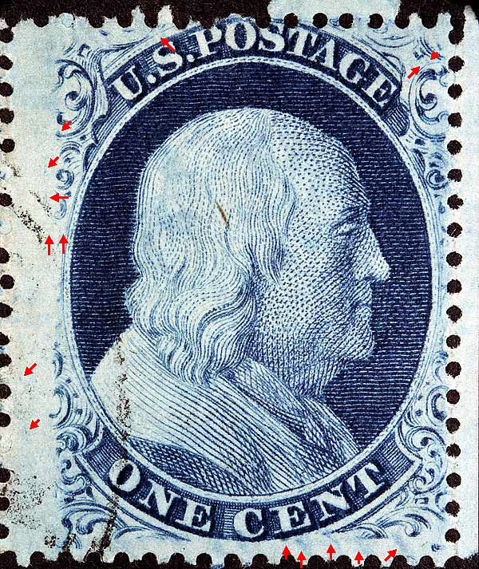
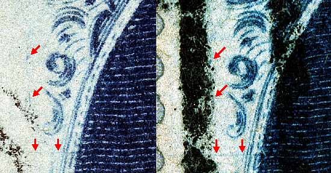
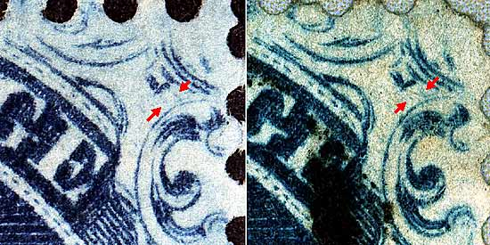
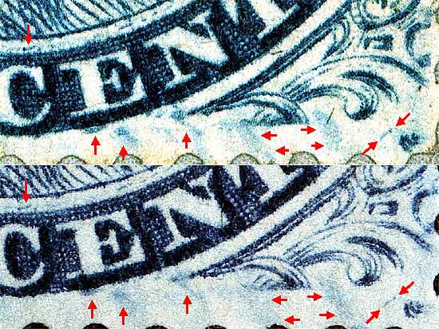
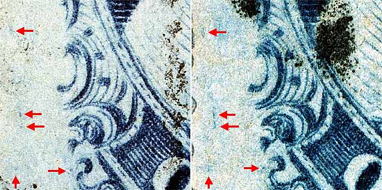
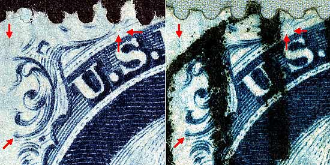

| 1¢ Franklin Issue of 1857-61, PLATE 5.
Pos 12R5, (Scott #24 var) |
| Scott #24 Blue, Type Va, Relief B Issued only perforated. NOTES: |
|  |
| Figure 1. (Below) Small broken vertical scratch ending with a dot as illustrated in the plating diagrams. The long horizontal scratch appears to only show on early impressions and is not consistent.
 |
| Figure 2. (Below) The red arrows indicate the location of another faint plating mark which is not clear on either copy.
 |
| Figure 3. (Below) Various blurs and plating marks. (red arrows) These marks are shown in Neinken, but this photomicrograph shows the subtlety more accurately. These markings are consistent on this position. Many "B" reliefs have similar blurs, but they all have variation by position. A small piece of the Right Full Plume is visible. Most Type Va "B" relief positions do not have this feature, so it can be helpful in plating this position.
 |
| Figure 4. (Below) A strong vertical dash west of Ornament "H" halfway between Position 11R5 and 12R5. This mark is consistent and is shown on the Neinken plating drawing.
 |
| Figure 5. (Below) This position has a break in the top curved line above the "S" of "US." Also note the lack of dashes below the top line. Many of the Type Va "B" reliefs share this feature. Plating marks at the bottom of Ornament B and a vertical dash of color above Ornament A are not illustrated in the plating diagrams but have been confirmed as constant.
 |
| DISCLAIMER and COPYRIGHT INFORMATION: Thanks for visiting this site. I hope you learn something new as we are making new discoveries all the time. You, the visitor, have my permission to link to my pages and to share the INFORMATION with others. The images themselves fall under the fair use guidelines established by the United States Congress and Copyright law. Basically contact us before using. I also ask in return that you send me an e-mail if I have made a mistake, or have made some other technical blunder that in my rush to put these pages up would cause the visitor confusion. Please also visit my other website at www.slingshotvenus.com. and support the live music arts. While your there, be sure to purchase our music. There are not many philatelic rock stars around and we need all the help we can get. :-) I can be reached at: nerdman@ix.netcom.com |